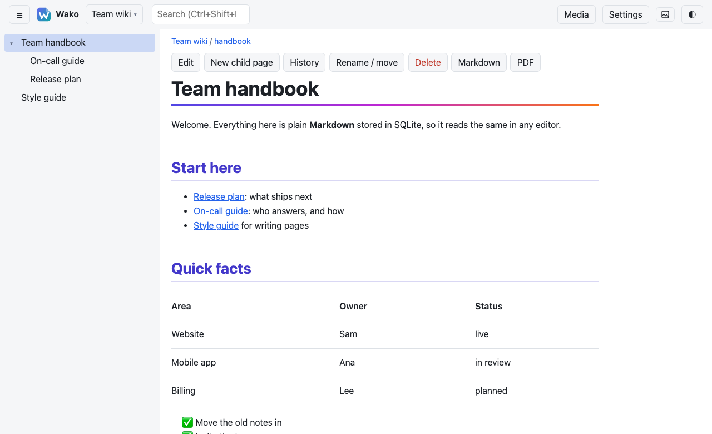
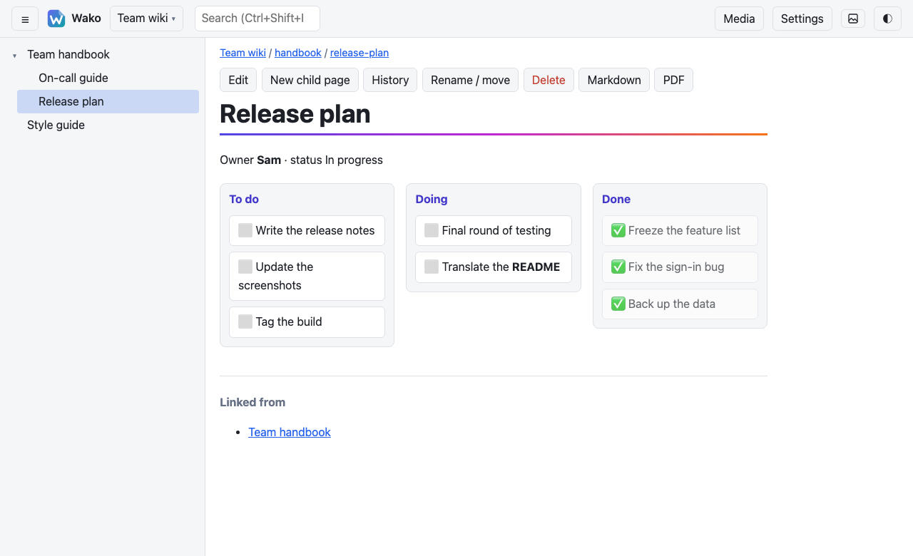

A wiki that keeps plain Markdown in SQLite
One static program, no runtime dependencies. Your pages stay ordinary Markdown files you can read, export and take anywhere.
- MIT licensed
- Written in Go
- Single static binary
- Private by default
- Docker image from scratch


Everything in the page, nothing in the way
wako does the wiki things you expect and stays out of your content. What you write is what is stored.
Markdown in, Markdown out
Ask a page for text/markdown (or add .md) and you get the text you wrote. A browser gets HTML. GitHub Flavored Markdown, and nothing more.
Spaces
Many independent wikis on one server, each with its own SQLite file, members and roles. A new space is private until you let anonymous visitors read it.
History and suggestions
Every change is kept, with diffs and restore, and saves are conflict-safe. People who may only suggest queue changes for an editor to accept or reject.
Kanban boards
Headings become columns and task items become cards, in plain Markdown. Add front matter and {{page.title}} macros to any page.
Pictures and PDFs
A media library per space. Paste or drop an image into the editor, phone photos are shrunk in the browser first, and the server strips metadata and makes smaller copies.
Find and follow
Full-text search, backlinks, a broken-link report and RSS feeds of changes, with the Markdown of new pages carried in each entry.
Portable
Export a space as a zip of ordinary .md files and images, import it again, or drive the wiki from the wako command-line client.
Careful by default
Raw HTML never shows, output is sanitised, pages carry a strict Content-Security-Policy, cross-site changes are refused, and passwords use Argon2id.
One program
A static Go binary with SQLite built in. No database server, no runtime, no C compiler. The Docker image is built from scratch.
See it working
A small wiki is running at wako-demo.henryvandenbroek.com. Every page shows one feature, and the Markdown behind it is one click away: use the Markdown button on any page.
Welcome
Start here. Front matter and {{page.*}} macros fill in the title, owner and path.
Project board
Kanban boards, as a whole page or as part of one (see also the roadmap).
To-dos
Task lists, shown as ✅ and ⬜, that stay plain text in any Markdown viewer.
Tables
Aligned columns, formatting inside cells, and a chart picture.
Links
Links to other pages, to other sites and to a PDF, plus a red link to a page nobody has written yet.
Pictures
Screenshots, sizes and SVGs from the media library, and PDF attachments.
Text and lists
Headings, nested lists, quotes and code blocks.
A tree of pages
Pages below pages, such as a summit trail with its own map and checklist.
AI, on your terms
Any assistant that speaks MCP can read and edit the wiki. You can also ask the wiki questions and have pages drafted. All of it is off until you set a provider.
Only what you may read
The pages an assistant sees are chosen from the spaces the person asking can read. A private space never reaches someone who is not a member.
Changes can wait
Give an assistant a token that can only suggest, and everything it writes waits as a diff for a person to approve.
Per space switch
A server administrator turns the AI features on one space at a time. Nothing is sent anywhere until then.
Run it
Build the image, start it with a volume, and open it. Sign in as admin.
With Docker
git clone https://github.com/hbroek/wako.git cd wako docker build -t wako . docker run -d --name wako --restart unless-stopped \ -p 127.0.0.1:8888:8888 \ -v wako-data:/data \ -e WAKO_ADMIN_PASSWORD='choose-a-password' \ wako
From source
git clone https://github.com/hbroek/wako.git cd wako make build ./bin/wakod # http://127.0.0.1:8888/ # data in ./data
Behind a reverse proxy, backups and updating are in the Docker guide.